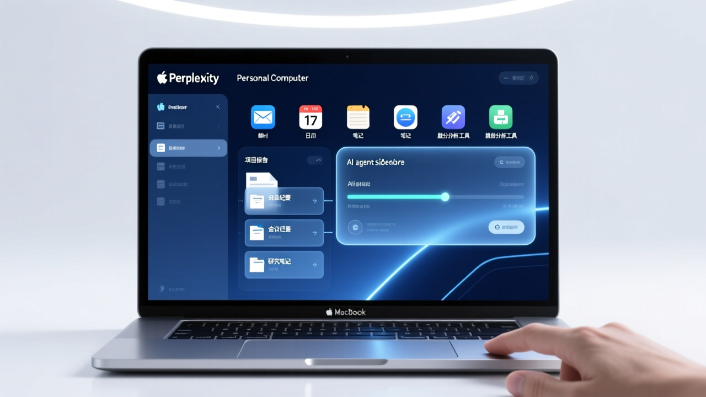

每個人都能使用的本地 AI 代理 瞄準 OpenClaw 安全痛點

Perplexity 宣佈 Personal Computer 桌面應用已向所有 Mac 用戶開放。這款本地 AI 代理可訪問本地文件、原生應用和 400+ 連接器，瞄準 OpenClaw 的安全痛點，但需要 Pro 或 Max 訂閱。
Personal Computer 是 Perplexity 通用型 AI 助理的擴展產品，旨在將 AI 能力從雲端帶到用戶自己的設備上。
相比 OpenClaw 的安全風險，Personal Computer 在 Perplexity 伺服器的安全開發環境中運行，提供更安全的 AI 計算環境。
可從 iPhone 遠程訪問 Mac Mini 上的 Personal Computer，啟動任務或批准請求。
支援超過 400 個連接器，可與各種應用和服務整合，處理複雜的多步驟工作流程。
| 比較項目 | Perplexity Personal Computer | OpenClaw |
|---|---|---|
| 運行環境 | 本地設備（Mac）+ 雲端安全環境 | 雲端或本地（提升權限） |
| 安全設計 | 安全開發環境，隔離風險 | 存在多重安全風險 |
| 訂閱需求 | Pro 或 Max 訂閱 | 一般訂閱 |
| 可用性 | 僅限 Mac | 跨平臺 |
| 文件訪問 | 本地文件 + 原生應用 | 依賴提升的系統權限 |
| 連接器 | 400+ 個 | 取決於配置 |
Personal Computer 將電腦從純雲端世界帶到你大多數實際工作已經發生的設備上。
— Perplexity 官方描述任何人都可以下載新版 Perplexity Mac 應用，但 Personal Computer 功能需要 Pro 或 Max 訂閱。目前僅提供直接下載，未上架 Mac App Store。
Perplexity Personal Computer 的全面開放，標誌著本地 AI 代理競賽邁入新階段。瞄準 OpenClaw 的安全痛點，Perplexity 試圖在便利性和安全性之間取得平衡，但需要付費訂閱的門檻可能影響普及速度。